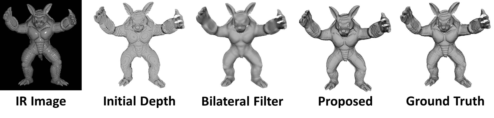

Geometric Image Processing Lab
Real-Time
Depth Refinement for Specular Objects
CVPR 2016
Roy Or – El1
Rom Hershkovitz1
Aaron Wetzler1
Guy Rosman2 Alfred M. Bruckstein1 Ron Kimmel1
1Technion – Israel Institute of Technology
2Computer Science and Artificial Intelligence Lab, MIT

Abstract
The
introduction of consumer RGB-D scanners set off a major boost in 3D
computer vision research. Yet, the precision of existing depth
scanners is not accurate enough to recover fine details of a scanned
object. While modern shading based depth refinement methods have been
proven to work well with Lambertian objects, they break down in the
presence of specularities. We present a novel shape from shading
framework that addresses this issue and enhances both diffuse and
specular objects’ depth profiles. We take advantage of the built-in
monochromatic IR projector and IR images of the RGB-D scanners and
present a lighting model that accounts for the specular regions in the input image. Using
this model, we reconstruct the depth map in real-time. Both
quantitative tests and visual evaluations prove that the proposed
method produces state of the art depth reconstruction results.
Video
Publications
1.
Real-Time
Depth Refinement for Specular Objects. Roy Or-El, Rom Hershkovitz, Aaron
Wetzler,
Guy Rosman, Alfred M. Bruckstein,
Ron Kimmel. In proceedings of IEEE Conference on Computer
Vision and Pattern Recognition (CVPR), 2016. [pdf]
[bibtex]